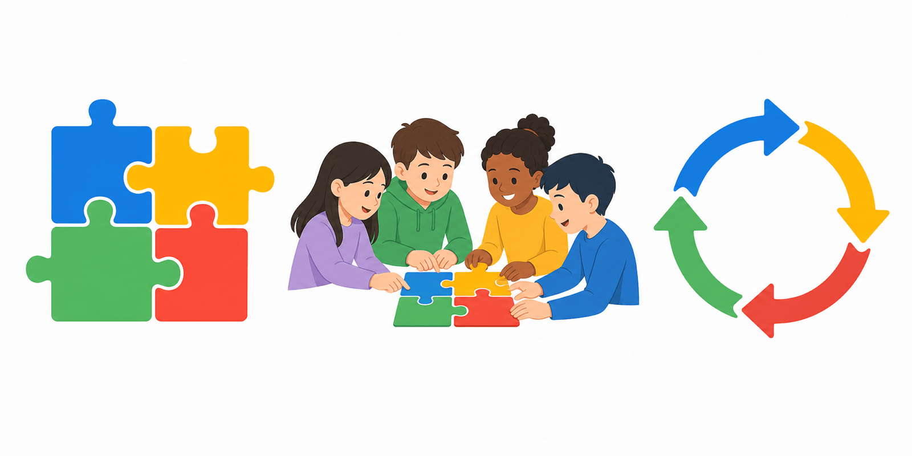
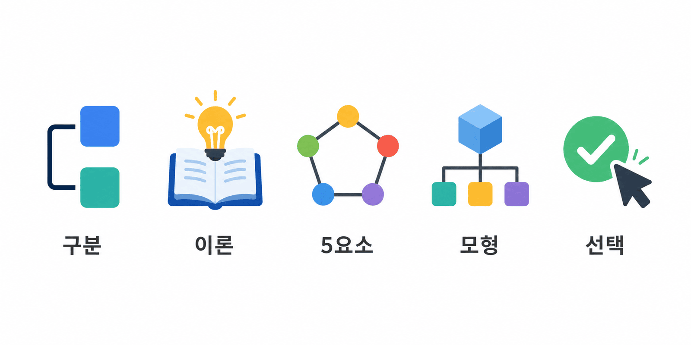
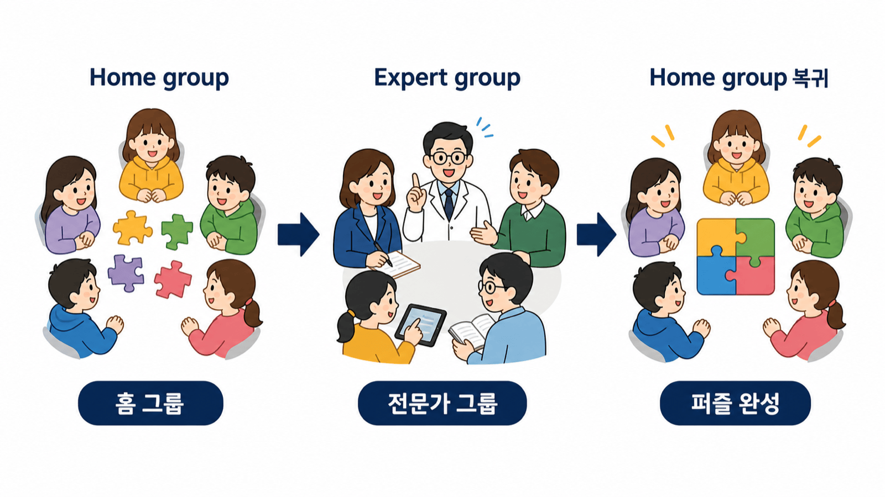
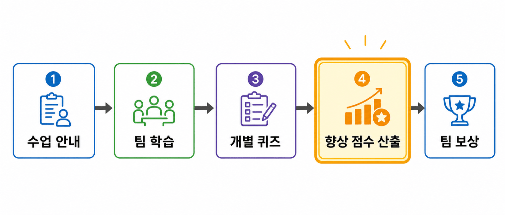
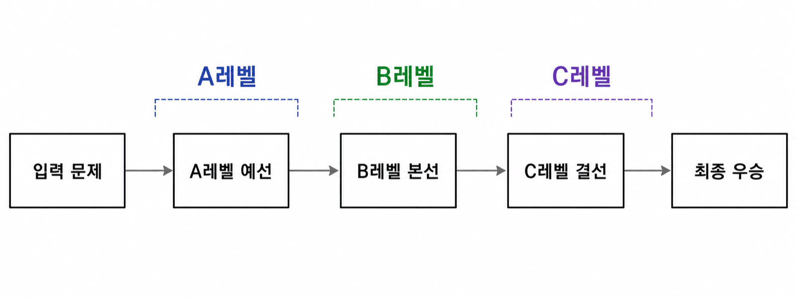

안내 질문: Johnson & Johnson의 5요소 중 어느 하나가 결여되면 어떤 문제가 생기는가?
교재 6장 2절 · 다섯 요소를 수업 언어로 바꾸기| 요소 | 권장 방식 | 근거 |
|---|---|---|
| 이질성 | 이질적 구성 권장 | 동료 교수·다양한 관점 충돌 촉진 |
| 규모 | 3–5명 적절 | 무임승차 방지·역할 다양성 확보 |
| 예외 (TGT) | 기본 팀은 이질적 구성, 토너먼트 테이블은 유사 성취 수준별 편성 | 수준별 공정 경쟁 보장 |
안내 질문: 부분을 다시 통합해야 전체 이해가 완성될 때 직소가 적합한 이유는 무엇인가?
교재 6장 3절 · Jigsaw와 부분 전문성① Home group: 이질적 소집단 → 구성원마다 서로 다른 세부 주제 배정
② Expert group: 동일 주제 담당자들이 모여 집중 학습
③ Home group 복귀: 전문가들이 원래 팀에서 가르치기 → 전체 완성

안내 질문: STAD의 향상 점수 체계가 이질적 학습 집단에서 협동을 촉진하는 이유는 무엇인가?
교재 6장 4절 · STAD와 TGT교사 강의 → 팀 학습 → 개별 시험 → 향상 점수 산출 → 팀 보상
핵심: 향상 점수 체계 — 이전 자신의 점수 대비 향상도로 기여

이질적 팀 구성 → 팀 학습 → 동질적 토너먼트 테이블 → 점수 합산 → 팀 보상
STAD와 차이: 비슷한 수준끼리 토너먼트 경쟁 → 고성취자에게도 도전감 제공

| 모형 | 분담 방식 | 평가·보상 | 적합 상황 |
|---|---|---|---|
| 직소 I | 세부 주제 분담 | 개별 평가 | 병렬 세부 주제 단원 |
| 직소 II | 분담 + 전체 개관 | 향상 점수·팀 보상 | 전체 조망 + 전문화 필요 |
| STAD | 동일 내용 팀 학습 | 향상 점수·팀 보상 | 기초 개념 숙달, 이질적 집단 |
| TGT | 동일 내용 팀 학습 | 게임·토너먼트(팀 보상) | 게임 동기 활용, 수준별 도전 |
안내 질문: 협동학습에서 교사의 역할이 '감소'가 아니라 '정교화'라고 하는 이유는 무엇인가?
교재 6장 5절 · 모형을 고르고 실행을 점검하기| 판단 기준 | 추천 모형 |
|---|---|
| 내용이 독립 세부 주제로 분절 가능 | 직소 I·II |
| 모든 학습자가 동일 내용 숙달 목표 | STAD |
| 게임 동기 활용, 수준별 도전 필요 | TGT |